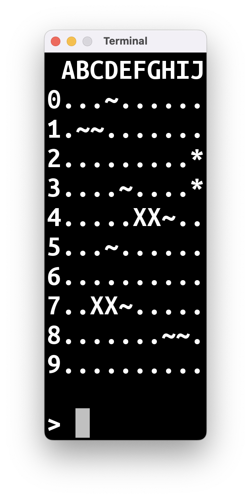
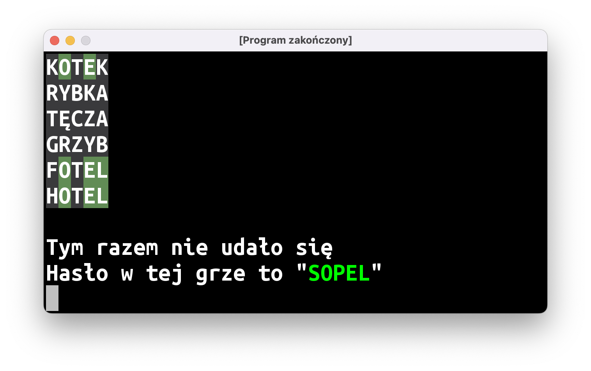
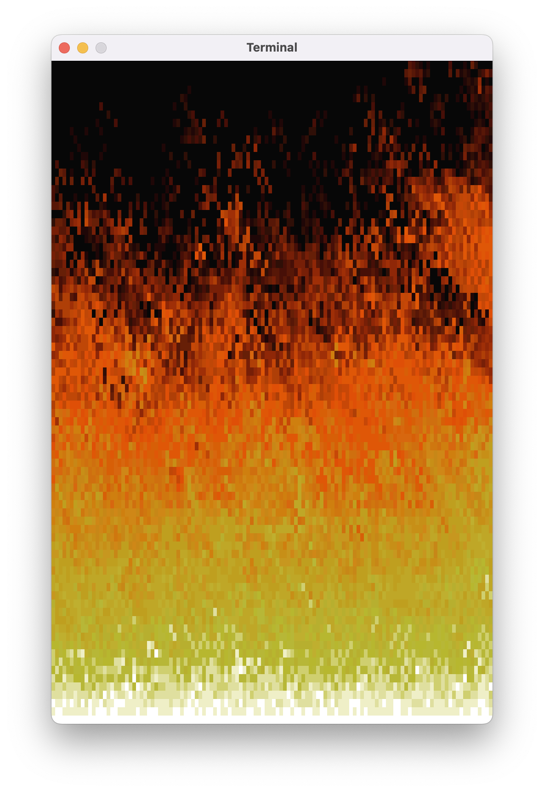

Ta wersja wpisu przeznaczona jest dla młodzieży – potencjalnych uczestników naszych zajęć. Wersja dla dorosłych znajduje się tutaj.
Jeżeli czytacie ten wpis, to w jakiś sposób dotarła do was informacja o organizowanych przez nas zajęciach. Przypuszczam, że chcielibyście wiedzieć więcej, zanim zdecydujecie się wziąć w nich udział.
Właśnie po to powstał ten wpis.
Co będziemy robić?
Na naszej stronie startowej mamy takie zdanie.
Będziemy zajmować się nauką programowania w języku Kotlin od podstaw na przykładzie prostych gier komputerowych.
Zawiera ono dwie istotne informacje:
bla bla bla nauka programowania bla od podstaw bla bla
Będziemy uczyć się programowania od absolutnych podstaw. Jeśli nie mieliście do czynienia z programowaniem do tej pory – nie ma problemu, wszystkiego się nauczymy. Jeśli już macie jakieś doświadczenie – też dobrze, będzie wam łatwiej zrozumieć to, o czym będę mówił.
Nie będą to zajęcia pt.: “przeklepywanie tego, co prowadzący nabazgrał na tablicy” albo “a teraz dzieci, jak przekleicie ten wielki kawałek kodu, którego nie rozumiecie ni w ząb, to stanie się coś niesamowitego! Łał, nieprawdaż?”. Założenie jest takie, że każdą linijkę kodu w waszym programie będziecie pisali własnoręcznie. Będziecie wiedzieli, co ona robi i jak ją zmienić, żeby wasz program robił coś innego.
Druga informacja to:
cośtam cośtam proste gry komputerowe
Programami, które będziemy pisać, będą proste gry. I tu konieczne jest sprostowanie: Minecraft nie jest prostą grą. Fortnite też nie. Bardzo możliwe, że nie mieliście okazji grać w prawdziwie prostą grę komputerową.
Spodziewam się, że to, co będziecie w stanie napisać po 2-3 miesiącach będzie wyglądało tak:
|  |  |
|---|
|  |  |
|---|
Później przejdziemy do bardziej skomplikowanego trybu graficznego, dodamy obsługę myszy/padów, dźwięki, itp. ale najpierw będziecie musieli opanować podstawy, żeby nie pogubić się w tym trudniejszym materiale.
Jak będą wyglądały zajęcia?
Będziemy spotykać się w Bibliotece Publicznej w Jerzmanowicach raz w tygodniu, we wtorki, na półtorej godziny. Zajęcia będą miały formę warsztatów: najpierw będę wam krótko opowiadał o jakiejś nowej koncepcji programistycznej, a potem będziemy wspólnie pisać malutkie programy testowe, na których nauczymy się jak zastosować tę koncepcję w praktyce. Raz na 3-4 tygodnie, przez całe zajęcia będziemy pisać jakiś większy program – najczęściej grę.
Po zajęciach będę wrzucał na stronę podsumowanie zajęć. Dzięki temu, jeśli opuścicie spotkanie, będziecie mogli przeczytać w domu, co robiliśmy i nadrobić braki w stosunku do reszty grupy. Oprócz tego będę zamieszczał listę programów do samodzielnego napisania w domu.
Myślicie pewnie teraz: “że co, praca domowa?!?!”.
Nie do końca. Nikt was nie okrzyczy, nie dostaniecie złej oceny, ani nie “wylecicie” z zajęć, jeśli nie będziecie tej dodatkowej pracy robić. Prawda natomiast jest taka, że jeśli podchodzicie do tematu na poważnie i chcecie tworzyć własne gry i inne programy, to trzeba zakasać rękawy i zabrać się do pracy. Tak jak każda umiejętność, programowanie wymaga praktyki.
Przy okazji tej samodzielnej pracy na pewno będziecie mieli masę pytań i zdarzy się, że coś nie będzie wam działać albo w jakimś momencie “utkniecie”. Żeby pomóc wam w takich sytuacjach, dostaniecie zaproszenie na kanał na Slacku (platforma komunikacyjna, taka jak Discord albo WhatsApp), gdzie będziecie mogli poprosić o pomoc.
Podsumowanie
- Nauka programowania od podstaw
- Samodzielna praca z kodem
- 90 minut warsztatów programistycznych tygodniowo
- Materiały dostępne na stronie
- Kanał Slack dla uczestników
Jeśli to, co opisałem w tym wpisie, wydaje się wam interesujące, poproście waszych rodziców o zgłoszenie was mailowo na adres jerz.codes@gmail.com.
Zapisy na rok szkolny 2022-2023 trwają do końca września. Pierwsze zajęcia odbędą się 11 października.